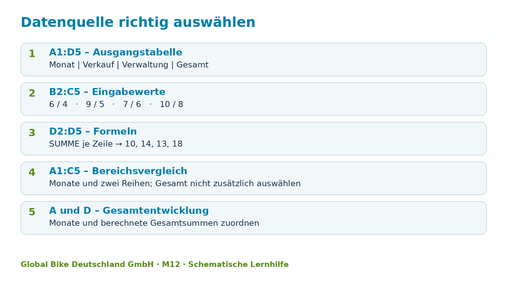

Ü11 – Diagramme für eine interne Besprechung erstellen
Global Bike Deutschland GmbH · Verwaltung · Löppt · freiwillig · unbenotet · keine KI
Ausgangssituation
Für eine interne Besprechung sollen geprüfte Unterlagen und Kostenanteile grafisch aufbereitet werden. Alle Daten sind simulierte Schulungsdaten, keine SAP-Daten oder Hauptfalllösung. Ü12–Ü14 nutzen bewusst dieselbe Kostenbasis für aufeinander aufbauende Qualitätsaufgaben.
Das trainieren Sie
F11; Materialien M6, M8, M11, M12.
Arbeitsdatei
UE11_Arbeitsdatei.xlsx öffnen und Arbeitskopie speichern. Blaue Felder sind Eingaben, grüne Felder vorhandene Formeln. Fehlende Ergebnisse selbst ergänzen.
Arbeitsaufträge
- Berechnen Sie Monate!D2:D5 mit SUMME und Kosten!B5 sowie C2:C5 mit Anteilen und absolutem Nenner.
- Markieren Sie Monate A1:C5 → Einfügen → gruppierte 2D-Säulen. Gesamt nicht als dritte Bereichsreihe darstellen.
- Markieren Sie Kosten A1:B4 → Einfügen → 2D-Kreis. Diagrammentwurf → Diagrammelement hinzufügen → Datenbeschriftungen → Prozent; Kategorien über Legende kennzeichnen.
- Ergänzen Sie Titel, Einheit, Zeitraum und sinnvolle Legende; platzieren Sie Diagramme neben der Tabelle. Prüfen Sie Daten auswählen und Achsenformat.
- Ändern Sie Monate B2 auf 10 und Kosten B2 auf 150; kontrollieren Sie Summen, Anteile und Diagramme; stellen Sie Werte wieder her.
Hilfen bei Bedarf


Selbstkontrolle
Freiwillige Vertiefung
Eine zusätzliche plausible Eingabe in einer Testkopie verändern, Ergebnis vorhersagen und prüfen. Keine Pflichtabgabe.
Excel-Arbeitsdatei herunterladen